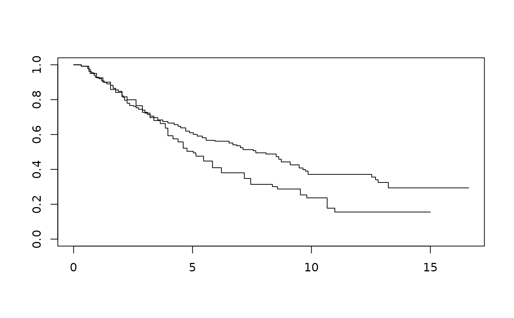

Time-to-event data example 1 for non-proportional hazards working group
Source:R/ex1_delayed_effect.R
ex1_delayed_effect.RdSurvival objects reverse-engineered datasets from published Kaplan-Meier curves. Individual trials are de-identified since the data are only approximations of the actual data. Data are intended to evaluate methods and designs for trials where non-proportional hazards may be anticipated for outcome data.
Usage
data(ex1_delayed_effect)Format
Data frame with 4 variables:
id: Sequential numbering of unique identifiers.month: Time-to-event.event: 1 for event, 0 for censored.trt: 1 for experimental, 0 for control.
References
Lin, Ray S., Ji Lin, Satrajit Roychoudhury, Keaven M. Anderson, Tianle Hu, Bo Huang, Larry F Leon, Jason J.Z. Liao, Rong Liu, Xiaodong Luo, Pralay Mukhopadhyay, Rui Qin, Kay Tatsuoka, Xuejing Wang, Yang Wang, Jian Zhu, Tai-Tsang Chen, Renee Iacona & Cross-Pharma Non-proportional Hazards Working Group. 2020. Alternative analysis methods for time to event endpoints under nonproportional hazards: A comparative analysis. Statistics in Biopharmaceutical Research 12(2): 187–198.
Examples
library(survival)
#>
#> Attaching package: ‘survival’
#> The following object is masked from ‘package:future’:
#>
#> cluster
data(ex1_delayed_effect)
km1 <- with(ex1_delayed_effect, survfit(Surv(month, evntd) ~ trt))
km1
#> Call: survfit(formula = Surv(month, evntd) ~ trt)
#>
#> n events median 0.95LCL 0.95UCL
#> trt=0 121 86 5.04 4.18 6.21
#> trt=1 240 132 7.66 6.54 9.48
plot(km1)

with(subset(ex1_delayed_effect, trt == 1), survfit(Surv(month, evntd) ~ trt))
#> Call: survfit(formula = Surv(month, evntd) ~ trt)
#>
#> n events median 0.95LCL 0.95UCL
#> [1,] 240 132 7.66 6.54 9.48
with(subset(ex1_delayed_effect, trt == 0), survfit(Surv(month, evntd) ~ trt))
#> Call: survfit(formula = Surv(month, evntd) ~ trt)
#>
#> n events median 0.95LCL 0.95UCL
#> [1,] 121 86 5.04 4.18 6.21